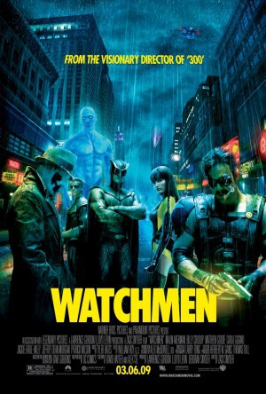

gesehen am 01.12.2019
gesehen am 01.12.2019Alternativ: Watchmen (Englischer Titel) gesehen am 01.12.2019
 
 IMDB-Wertung: 7.6 / 10
IMDB-Wertung: 7.6 / 10  Tomatometer: 64
Tomatometer: 64  Metascore:
Metascore: 
In a gritty and alternate 1985 the glory days of costumed vigilantes have been brought to a close by a government crackdown, but after one of the masked veterans is brutally murdered an investigation into the killer is initiated. The reunited heroes set out to prevent their own destruction, but in doing so discover a deeper and far more diabolical plot.
Ultimate Cut
Jahr: 2009
Dauer: 215 Minuten
FSK: 16
Land: USA Studio: Warner Bros.Tonspuren: DD5.1 - ,
Untertitel: Deutsch, Englisch,
Auflösung: 1080p (1920x800) Größe: 20070 MB
Genre: Action, Drama, Sci-Fi, Mystery
Regisseur: Zack Snyder
Drehbuch: David Hayter, Alex Tse, Dave Gibbons, Alan Moore
Soundtrack: Tyler Bates
Darsteller:
 Malin Akerman als Laurie Jupiter / Silk Spectre II
Malin Akerman als Laurie Jupiter / Silk Spectre II Billy Crudup als Dr. Manhattan / Jon Osterman
Billy Crudup als Dr. Manhattan / Jon Osterman Matthew Goode als Adrian Veidt / Ozymandias
Matthew Goode als Adrian Veidt / Ozymandias Jackie Earle Haley als Rorschach
Jackie Earle Haley als Rorschach Jeffrey Dean Morgan als Edward Blake / Comedian
Jeffrey Dean Morgan als Edward Blake / Comedian Patrick Wilson als Dan Dreiberg / Nite Owl
Patrick Wilson als Dan Dreiberg / Nite Owl Carla Gugino als Sally Jupiter / Silk Spectre
Carla Gugino als Sally Jupiter / Silk Spectre Matt Frewer als Moloch
Matt Frewer als Moloch Laura Mennell als Janey Slater
Laura Mennell als Janey Slater Rob LaBelle als Wally Weaver
Rob LaBelle als Wally Weaver Gary Houston als John McLaughlin
Gary Houston als John McLaughlin James M. Connor als Pat Buchanan
James M. Connor als Pat Buchanan John Shaw als Doug Roth
John Shaw als Doug Roth Jerry Wasserman als Detective Fine
Jerry Wasserman als Detective Fine Don Thompson als Detective Gallagher
Don Thompson als Detective Gallagher Frank Novak als Henry Kissinger
Frank Novak als Henry Kissinger Garry Chalk als NORAD General
Garry Chalk als NORAD General Ron Fassler als Ted Koppel
Ron Fassler als Ted Koppel Stephanie Belding als Janet Black
Stephanie Belding als Janet Black Michael Kopsa als Paul Klein
Michael Kopsa als Paul Klein William S. Taylor als Prison Psychiatrist
William S. Taylor als Prison Psychiatrist Danny Wattley als Huge Prisoner
Danny Wattley als Huge Prisoner Fulvio Cecere als Agent Forbes
Fulvio Cecere als Agent Forbes Ted Cole als Dick Cavett
Ted Cole als Dick Cavett Mark Acheson als Large Man At Happy Harry's
Mark Acheson als Large Man At Happy Harry's Chris Gauthier als Seymour
Chris Gauthier als Seymour Jay Brazeau als News Vendor
Jay Brazeau als News Vendor Jesse Reid als Teenager at Newsstand
Jesse Reid als Teenager at Newsstand Manoj Sood als Karnak Scientist
Manoj Sood als Karnak Scientist Dan Payne als Dollar Bill
Dan Payne als Dollar Bill Glenn Ennis als Hooded Justice
Glenn Ennis als Hooded Justice Darryl Scheelar als Captain Metropolis
Darryl Scheelar als Captain Metropolis Clint Carleton als Young Hollis Mason
Clint Carleton als Young Hollis Mason Mike Carpenter als Young Moloch
Mike Carpenter als Young Moloch Brett Stimely als John F. Kennedy
Brett Stimely als John F. Kennedy Carrie Genzel als Jackie Kennedy
Carrie Genzel als Jackie Kennedy Greg Travis als Andy Warhol
Greg Travis als Andy WarholDatei: X:\Comic-Filme\Watchmen Die Wächter Ultimatce Cut (2009, FSK16, 1920x800).mkv seit 01.12.2019
Festplatte: Comicverfilmungen+MusikCD
 Es gibt insgesamt 44 Filme in der Gruppe 'Comic-Filme'
Es gibt insgesamt 44 Filme in der Gruppe 'Comic-Filme'